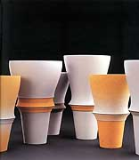

|
Rita Ternes
& Thomas Naethe
German ceramists
|
Rita Ternes and Thomas Naethe are truly a remarkable
couple. While partners in life (they have shared a studio since
1982), they have both developed a unique style each of their
own. Thomas Naethe's wheel-thrown vessels display an incomparable
style and sensitivity to form, while Ternes' folded, geometric
sculptures are in a category of their own. Both occupy an independent
niche in the world of ceramic art and design. |
|
Ceramist Rita Ternes (b. 1955) studied at the State College
of Ceramic Design and Technology in Höhr-Grenzhausen from 1978–81.
Ternes is known for her hand-built, sculptural vessels, decorated
with repeating geometric patterns. She won the Contemporary Ceramics
award of Offenburg in 1983 and a Rosenthal award in 1985.
Artist's Statement
My sculptures separate the surrounding space from a self-created
interior and simultaneously penetrate it on a flat expanse. I try
to achieve a form with the most possible tension through the curvature
of the wall and the composition of its different components. Through
the choice of color the quality of the inner and outer space is
emphasized. This continues to bring me to the dialogue of striped
surface. In a few of my works the stripes fall into conflict with
one another and create complex ornamental systems. For quite some
time my work has been developing in the direction of minimalism.
In this way, simple formulary elements influence the development
of the work' s character through imperceptible change of color.
My work is constructed with a wet stoneware slab. The surface
is inscribed and painted with colored slips and gas-fired at 11600
centigrade in a reducing atmosphere.
-----------------------------------------------
Ceramist Thomas Naethe (b. 1954) trained under Gisela Schliessler
in Krösselbach from 1973-76 and received his masters diploma
after studying at the University of Ceramic Design (Fachhochschule
für Keramikgestaltung) in Höhr-Grenzhausen from 1978-81.
His minimalist, wheel-thrown and sometimes assembled stoneware vessels
display a high degree of design and personal sense of form and have
an industrial look about them. Naethe teaches at the University
of Cologne.

Artist's Statement
My vessels are compositions created from convex and concave designs,
which always rotate on a perpendicular axis. By changing of the
individual elements, new variations of the rotational-symmetrical
vessel parts are created, which in turn become vessels themselves.
The base forms the counterpoint of the composition, as in music.
It is sculpted and always relates to the complete vessel.
In the last few years I have also created smaller vessel ensembles.
The surface gives emphasis to the sculpted quality of the work.
Colored rings separate and unite the individual parts simultaneously.
My work is turned from stoneware clays on a potters wheel, removed
from the wheel, and sometimes constructed from four pieces. Their
surface designs are created using colored slips, coloring salts,
with a porcelain slip, coloring oxides and a white feldspathic glaze.
They are gas-fired at 12500 centigrade in a reducing
atmosphere.
More Featured Artists
More Articles
|
{kind=link}
{kind=link}
{kind=link}
{kind=link}
{kind=link}
{kind=link}
{kind=link}
{kind=link}